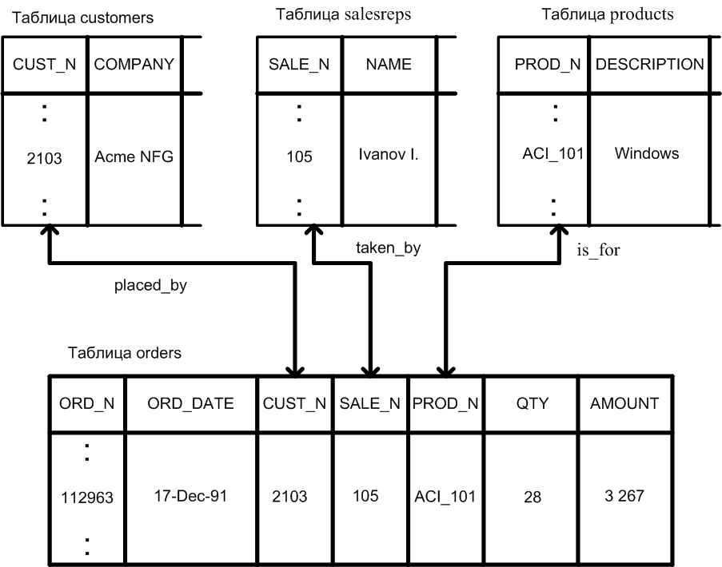

Создание и заполнение базы данных в СУБД Oracle
Цель работы – знакомство
с инструментальным средством SQL*Plus
и основными элементами языка SQL, создание таблиц, индексов, синонимов и последовательностей БД, задание простых ограничений столбцов, вставка строк.
Для работы с БД необходимо знание
специальных интерфейсов и навыки программирования, но в первую очередь важно
представлять себе назначение и структуру самой базы данных. Под структурой базы данных понимается набор
именованных и взаимосвязанных таблиц, их атрибутов, а также именованных
ограничений на значения атрибутов (условий уникальности, условий на значение,
допустимость значений типа NULL, ограничений
ссылочной целостности и т. д.).
Язык SQL в настоящее время поддерживается большинством СУБД с различными
отклонениями от стандарта, регламентирующего общие правила написания SQL инструкций. Главным отличием языка SQL от других языков программирования является его «непроцедурность», т.е.
посредством инструкций SQL просто указывается что сделать и какая информация из базы данных
необходима, а как и откуда она извлекается определяется СУБД.
Структуру БД можно
определять с помощью языка определения
данных (DDL – data definition language), а добавлять, удалять, изменять и извлекать информацию из базы
посредством языка управления данными (DML – data manipulation language). Основу DDL составляют инструкции CREATE, ALTER, DROP, а основу DML – инструкции SELECT, INSERT, UPDATE, DELETE.
Алфавит языка SQL
включает следующие символы:
1)
буквы: A..Z, a..z;
2)
цифры: 0..9;
3) символы: + - * / ! @ $ # = < > ^
' " ( ) | _ ; , .
Длина
идентификаторов SQL может достигать 30 символов,
они обычно начинаются с буквы и могут включать в себя также цифры, символы $ и
#, символ подчеркивания. Исключение составляют имена базы данных (до восьми
символов). В некоторых версиях СУБД ORACLE
допускается использование русских букв. Имя любого объекта может дополнительно
включать имя схемы: [схема.]имя_объекта. Схема представляет собой набор
объектов, принадлежащих конкретному пользователю, и идентифицируется его
именем. Среди объектов схемы могут быть таблицы, представления (виртуальные
таблицы), индексы, последовательности, триггеры, процедуры и функции.
Символьные
литералы записываются в одинарных кавычках: 'test'.
При необходимости присутствия одинарной кавычки внутри символьного литерала она
удваивается.
Числовые литералы представляют
собой целое или действительное значения со знаком или без знака, при этом
действительные значения могут быть записаны в формате с десятичной точкой или в
экспоненциальной форме.
В
SQL
имеется специальное неопределенное значение NULL.По
смыслу оно не эквивалентно понятию пустая строка для символьных типов и
нулевому значению для числовых типов. Если в некотором столбце таблицы данные
отсутствуют, говорят, что его значение NULL.
Столбец с данными любого типа может содержать значение NULL,
если только он специально не описан с ограничением NOT NULL.
Однако, следует помнить, что в Oracle проверка на сравнение пустого литерала ‘’
IS NULL вернёт true.
В SQL могут использоваться псевдостолбцы –
формируемые системой столбцы, имеющие стандартные имена. Их значения можно
только просматривать и использовать, но корректировать (добавлять, удалять,
изменять) нельзя. К псевдостолбцам относятся: ROWID,
ROWNUM,
LEVEL,
CURVAL,
NEXTVAL.
Псевдостолбец ROWID содержит уникальные для всей базы данных физические адреса строк
таблиц. Значение псевдостолбца ROWID
определяется при вставке строки в таблицу и не изменяется, пока строка
присутствует в таблице.
Псевдостолбец
ROWNUM
определяет порядковый номер строки, выбранной из таблицы при выполнении
запроса. Он обычно используется для ограничения числа строк, выбираемых из
таблицы запросом.
Псевдостолбец
LEVEL
возвращает уровень вложенности данных, позволяя тем самым строить запросы для
получения информации об иерархии данных. Используется только в иерархических
запросах вместе с предложением CONNECT BY.
Псевдостолбцы
CURVAL,
NEXTVAL
предназначены для работы с текущим и следующим значениями последовательности..
Типы
данных. К наиболее часто используемым
типам данных относятся символьные, числовые, тип дата/время, двоичные и большие
объекты.
Символьные типы
данных представлены следующими типами:
CHAR [длина], VARCHAR2(длинна)
и LONG.
Тип
данных CHAR
представляет собой символьные строки фиксированной длины. Минимальная длина
равна 1, максимальная - 2000 байт. Если значение, помещаемое в столбец данного
типа, превосходит указанный размер, то выводится сообщение об ошибке; если
длина помещаемого значения меньше указанной длины, то значение дополняется
пробелами справа.
Тип
данных VARCHAR2
представляет собой символьные строки переменной длины. Максимальный размер
строки 4000 байт, минимальный - 1 байт. При помещении текста в столбец большего
размера дополнение пробелами не производится.
Строки
этих двух типов сравниваются по-разному. Строки типа CHAR
- посимвольно с дополнением пробелами строки с меньшей длиной до размера строки
с большей длиной. Строки VARCHAR2
- без дополнения пробелами до большей длины. Поэтому для двух в принципе
одинаковых строк могут быть получены различные результаты при их сравнении.
Например, для двух строк 'AB'
и 'AB
' (вторая строка содержит пробел, а первая нет) типа CHAR
получим, что 'AB'
= 'AB'.
Для этих же строк типа VARCHAR2
результатом сравнения будет 'AB'
< 'AB
'.
Тип
данных LONG
представляет собой символьные данные переменной длины, величина которой может
достигать 2 Гб. На использование переменных этого типа накладывается ряд
ограничений и чаще вместо этого типа используется объектный символьный тип CLOB.
Числовые
типы представлены типом NUMBER,
который позволяет определить три различных типа данных:
1) NUMBER;
2) NUMBER(p);
3) NUMBER(p, s);
В
первом случае определяются действительные числа, диапазон которых от 1.0*10-130
до 1.0*10126-1, мантисса содержит 38 знаков. Во втором случае
считается, что определяется диапазон целых чисел, где p
- количество цифр в числе (от 1 до 38). В третьем случае описываются числа с
фиксированной точкой; p - общее количество цифр (от 1 до 38), s
- масштаб (от -84 до 127) - определяет количество цифр после запятой. Если s
> 0, то число округляется до указанного числа знаков справа от десятичной точки,
если s
< 0, то число округляется до указанного числа знаков слева от десятичной
точки.
Следует
отметить, что язык SQL
поддерживает типы данных стандарта ANSI SQL.
Если такой тип данных (INTEGER,
SMALLINT,
DECIMAL,
FLOAT
и REAL
и т. д.) встречаются при определении типа столбца таблицы, то имя типа
сохраняется, но сами данные хранятся в виде, определяемом одним из типов базы
данных Oracle.
Тип
данных DATE представляет
собой специально организованный тип, который хранит столетие, год, месяц, день,
часы, минуты, секунды в одном поле. Для выборки текущей даты используется
системная переменная функция SYSDATE:
SELECT sysdate
“Теущее время” FROM dual;
Чтобы
увидеть другие составляющие поля или изменить формат вывода применяется
встроенная функция to_char
и шаблон (см. лаб. раб №2), например:
SELECT to_char (sysdate,
‘DD.MM.YY HH24:MI:SS') “Время и дата”
FROM dual;
Над
переменными типа DATE
можно выполнить арифметическое действие - вычитание. Результат операции
определяет количество дней между этими двумя датами. К дате можно прибавить или
отнять числовую константу, рассматриваемую как количество дней или часть дня.
В
приложении 4
приведены основные встроенные функции Oracle для работы с символьными,
числовыми полями и полями дата/время.
Двоичные
типы данных используются для хранения
двоичных неструктурированных данных (звуковые файлы, файлы изображений и т.
д.), обработка которых не поддерживается ORACLE.
К ним относятся типы RAW(длина) и LONGRAW.
Максимальный размер строки типа RAW
2000 байт, минимальный - 1 байт. Длина переменных типа LONGRAW
может достигать 2 Гб.
К большим объектам (LOB-объектам)
относятся CLOB,
BLOB
и BFILE.
Они предназначены для хранения неструктурированных данных большого объема - до
4 Гб. Тип CLOB
хранит данные символьного типа, типы BLOB
и BFILE
используют для хранения двоичных данных. Столбцы типа LOB
содержат не сами данные, а указатели на их местоположение.
Создание и
изменение структуры таблицы, удаление таблиц.
Создание таблицы выполняется с помощью инструкции CREATE TABLE, упрощенный
синтаксис которой имеет следующий вид:
CREATE TABLE имя_таблицы
{({ имя_столбца тип_данных [DEFAULT значение]
[ограничения_столбца] | ограничение_таблицы}
[,{ имя_столбца тип_данных [DEFAULT значение]
[ограничения_столбца] |
ограничение_таблицы}]...) |
AS
подзапрос};
Таблица может
быть создана либо стандартным образом через описание ее компонент, либо в
результате выполнения некоторого подзапроса. Подзапрос – это обычный запрос на
выборку информации, реализуемый оператором SELECT. При создании таблицы
задаваемые имена таблиц и имена столбцов должны удовлетворять правилам,
предписываемые идентификаторам. При этом естественно, что имена, присваиваемые
таблицам, должны быть уникальными в схеме пользователя, а имена столбцов должны
быть уникальными в рамках одной таблицы. Для каждого столбца указываются тип
данных и, если необходимо, значение, вставляемое в столбец по умолчанию
(DEFAULT значение). Важным элементом при создании таблиц является задание
ограничений целостности данных, которые позволяют отслеживать правильность
модификации имеющихся данных или вставляемых в таблицу новых данных.
Ограничения целостности данных делятся на два типа: ограничения столбца и
ограничения таблицы. Ограничения столбца позволяют определить условия, которым
должны удовлетворять значения соответствующего столбца; ограничения целостности
данных, накладываемые на таблицу, позволяют проверить правильность всех
добавляемых или модифицируемых строк таблицы. Ограничение может быть
именованным или безымянным. Удобнее использовать именованные ограничения,
поскольку при выдаче информации, связанной с возникшим нарушением одного из
ограничений, выдается и имя этого ограничения, что весьма полезно для
исправления ошибок в дальнейшем. Задание ограничений на столбец или ограничений
на таблицу осуществляется по следующему синтаксису:
[CONSTRAINT имя_ограничения] тип_ограничения.
Имеются
следующие типы ограничений, накладываемых на столбец:
1. Первичный
ключ (PRIMARY KEY) – это ограничение требует, чтобы вводимые в столбец значения
были уникальными и отличными от пустых (NULL), поскольку
они будут использоваться в качестве первичного ключа, однозначно
идентифицирующего запись; первичный ключ определяется для таблицы только
единожды и поддерживает ее целостность;
2.
Уникальность (UNIQUE) – это ограничение требует, чтобы вводимые в столбец
значения в рамках одной таблицы были уникальными;
3.
Обязательное наличие данных (NOT NULL) – это ограничение
требует обязательного присутствия в столбце некоторого значения, т.е. не
допускаются значения NULL при заполнении таблицы.
Обязательное наличие данных в столбце определяется разработчиком на стадии проектирования таблицы и зависит только от его смысловой
нагрузки в данной таблице.
4. Условие на
значение CHECK(выражение) – это ограничение позволяет подвергнуть определенной
проверке вставляемое в столбец значение; если условия, наложенные на вставляемые
значения, не выполняются, то значения в столбец не помещаются;
Рассмотрим
пример, в котором для поля номера сотрудника sno создается
ограничение с именем s1, которое
позволяет указывать в качестве номера только числа от 101 до 199:
create table staff (sno INTEGER not null,
age
INTEGER check (age >=21),
constraint s1 check (sno between
101 and 199)
);
Необходимо
отметить, что в Oracle невозможно
использовать для проверок значений в столбцах системную переменную SYSDATE, если только
не задать ее в качестве DEFAULT - значения для другого столбца той же таблицы,
а затем сравнивать с ним нужное поле на уровне табличного ограничения CHECK.
5. Внешний
ключ таблицы (FOREIGN KEY) позволяет установить взаимосвязь значений указанного
столбца со значениями столбца другой таблицы при помощи ключевого слова
REFERENCES. Таблица, на чей столбец ссылается другая таблица, называется
главной или родительской, а таблица, ссылающаяся на нее, – подчиненной или
дочерней. Взаимосвязь обеспечивается использованием следующей конструкции:
REFERENCES
имя_таблицы-родителя [(имя_столбца)] [ON DELETE CASCADE | ON DELETE SET NULL]
При внесении
значения в столбец создаваемой таблицы система будет автоматически проверять
наличие аналогичного значения в указанном столбце таблицы-родителя. При этом
естественно, что для обеспечения однозначности устанавливаемой взаимосвязи все
значения, находящиеся в столбце, на которые производится ссылка, должны иметь
ограничение UNIQUE или PRIMARY KEY. Если в качестве имени столбца родительской
таблицы используется первичный ключ, то имя столбца можно не указывать.
Конструкция ON DELETE CASCADE указывает, что при удалении строк в главной
таблице автоматически осуществляется удаление соответствующих строк и в
подчиненной таблице; ON DELETE SET NULL указывает, что при удалении
родительских строк на месте их значений в дочерней таблице будет установлено
значение NULL.
Ограничение
на таблицу во многом напоминают ограничения столбца, но при этом задействуют,
как правило, несколько столбцов. Также ограничение столбца помещается в конец
описания определения данного столбца после типа данных. Ограничение таблицы
помещается в конец описания таблицы после последнего имени столбца, но перед
заключительной круглой скобкой. Например, можно задать ограничение PRIMARY KEY
на уровне таблицы, указав список имен столбцов, тем самым, определив составной
первичный ключ.
Можно
определить составной внешний ключ для таблицы. Естественно, что в случае
составного внешнего ключа перечень столбцов в подчиненной таблице и перечень
столбцов в главной таблице должны совпадать по количеству, типу данных и
порядку следования. Например:
FOREIGN KEY
(список_имен_столбцов)
REFERENCES
имя_таблицы(список_имен_столбцов)
[ON DELETE
CASCADE]
Если
ограничение CHECK затрагивает значения нескольких столбцов, увязывая их в
некоторое достаточно сложное условие, то такое ограничение также удобно
определить как ограничение на таблицу.
Рассмотрим
создание таблицы заказов – Orders. На рис. 1
приведена предполагаемая структура БД, отражающая связи между таблицами.

Рис. 1.
Ниже
приведена инструкция, которая создаст таблицу Orders, при
условии, что таблицы, с которыми она связана к моменту ее создания уже
существуют. Если таблиц, на которые ссылается данная таблица, нет, то связи с
ней могут быть созданы позже при помощи инструкции ALTER TABLE.
create table
orders (ord_n INTEGER not null,
ord_date
date not null,
cust_n
VARCHAR2(5) not null,
sale_n
VARCHAR2(5) not null,
prod_n
VARCHAR2(10) not null,
qty
INTEGER,
amount
INTEGER,
primary
key (ord_n),
constraint
placed_by foreign key
(cust_n) references
customers,
constraint
taken_by foreign key
(sale_n) references
salesreps,
constraint
is_for foreign key
(prod_n) references
products);
После создания таблицы можно просмотреть её структуру командой SQLPlus:
DESC[RIBE] orders
Для изменения
структуры таблицы используется оператор ALTER TABLE, с помощью
которого можно осуществить добавление столбцов или ограничений столбцов или
таблицы (предложение ADD), изменение
определения столбцов (предложение MODIFY), удаление ограничений столбца или таблицы
(предложение DROP),
переименование столбцов (предложение RENAME). Рассмотрим
несколько примеров.
1.
Добавить новый столбец в таблицу orders:
ALTER TABLE orders ADD new_column VARCHAR2(10);
2.
Изменить новый столбец в таблице orders, увеличив
его размер до 30 байт:
ALTER TABLE orders MODIFY old_column VARCHAR2(30);
3.
Удалить столбец из таблицы orders можно
следующим образом:
ALTER TABLE orders DROP COLUMN old_column;
4.
Чтобы переименовать столбец в таблице orders
используется запись:
ALTER TABLE
orders RENAME COLUMN old_column TO new_column;
Удаление
таблицы можно выполнить с помощью инструкции:
DROP TABLE имя_таблицы [CASCADE
CONSTRAINTS];
При наличии конструкции CASCADE CONSTRAINTS
вместе с удалением таблицы уничтожаются ограничения внешнего ключа в других
таблицах.
Вставка строк
в таблицу осуществляется с помощью DML инструкции
INSERT, которая имеет следующий синтаксис:
INSERT INTO имя_таблицы [(список_столбцов)]
{VALUES
(значение1 [, значение2] ...) | подзапрос};
Если
список столбцов не указывается, то список значений в предложении VALUES должен
содержать значения для всех столбцов таблицы, причем порядок их следования
должен однозначно соответствовать порядку их следования в строке. Кроме этого,
должно быть соответствие между типами данных столбцов и значениями,
передаваемыми в предложении VALUES, в частности, символьные литералы и литералы типа
«дата/время» заключаются в одинарные кавычки. Если формат вводимых данных
отличается от текущего в сессии, то при вводе используют встроенную функцию to_DATE для приведения данных к нужному виду. Например, to_DATE('12/12/2012', 'dd.mm.yyyy')
Так же
инструкция INSERT INTO может использоваться с подзапросом, что позволяет
перенести строки из некоторой существуюўей таблицы в создаваемую таблицу:
INSERT INTO имя_таблицы [(список_столбцов)]
SELECT запрос;
Кроме того, следует
помнить, что INSERT INTO, как
любая DML
инструкция в SQLPlus
выполняется только в оперативной памяти текущего сеанса, то есть все изменения
не отражаются в БД, пока не будет явного подтверждения выполнения транзакции
командой COMMIT.
Проверить результат
вставки можно командой:
SELECT * FROM имя_таблицы;
Создание
индексов. Индекс – это средство, обеспечивающее быстрый доступ к строкам
таблицы на основе значений одного или нескольких столбцов. СУБД пользуется
индексом так же, как читатели пользуетесь предметным указателем книги. В
индексе хранятся значения данных и указатели на строки, где эти данные
встречаются. Данные в индексе располагаются в отсортированном по убыванию или
возрастанию порядке, чтобы СУБД могла быстро найти требуемое значение. Затем по
указателю СУБД может быстро локализовать строку, содержащую искомое значение.
Наличие или отсутствие
индекса совершенно незаметно для пользователя, обращающегося к таблице.
В Oracle можно создать,
изменить или удалить индекс для одного или нескольких столбцов таблицы
используя следующий синтаксис:
CREATE [OR REPLACE] [UNIQUE | BITMAP] INDEX [схема.] имя_индекса
ON [схема.] имя_таблицы [псевдоним] (столбец | выражение_для_столбца [ASC | DESC][, …]);
где UNIQUE – означает, что
значения столбцов, на которые ссылается индекс, должны быть уникальными; BITMAP
– изменение структуры индекса со сбалансированного дерева на структуру
растровой карты.
Создание
псевдонимов. Псевдоним – это
назначаемое пользователем имя, которое заменяет полное имя некоторой таблицы с
целью его упрощения.
В ORACLE для
создания псевдонимов используется инструкция CREATE SYNONYM.
CREATE [PUBLIC] SYNONYM имя_синонима
FOR [схема.] имя_таблицы[@связь_БД]
После создания псевдонима
его можно использовать в запросах SQL как обычное имя таблицы. Применение
псевдонимов смысл запроса не изменяет, так как и в этом случае необходимо иметь
разрешение на доступ к таблицам других пользователей. Тем не менее, псевдонимы
упрощают инструкции SQL, и последние приобретают такой вид, как если бы вы
обращались к своим собственным таблицам. Псевдоним можно удалить посредством
инструкции DROP SYNONYM.
Создание последовательности. Использование
последовательностей полезно для автоматической генерации уникальных первичных
ключей для данных, а также для
координирования ключей между различными строками или таблицами.
Без генератора последовательностей порядковые номера
можно создавать лишь программным способом.
Общий синтаксис создания:
CREATE
SEQUENCE [schema].sequence_name
[INCREMENT
BY increment_num]
[START
WITH start_num]
[MAXVALUE
maximum_num | NOMAXVALUE]
[MINVALUE
minimum_num | NOMINVALUE]
[CYCLE
| NOCYCLE]
[CACHE
cache_num | NOCACHE]
[ORDER | NOORDER];
где,
sequence_name – имя
последовательности;
increment_num – шаг
последовательности, по умолчанию, это 1. Абсолютное значение этого параметра
должно быть меньше, чем разница между конечным и начальным значениями;
start_num – целочисленное
значение, с которого начинается отсчет, по умолчанию это 1;
maximum_num – максимальное
значение последовательности; значение maximum_num должно быть больше или равно
значению start_num, и больше, чем значение minimum_num;
NOMAXVALUE – устанавливает
максимальное значение равным 1027 для возрастающей последовательности, или –1
для убывающей. NOMAXVALUE используется по умолчанию;
minimum_num - минимальное
значение последовательности; minimum_num должно быть меньше либо равно
start_num, и меньше, чем maximum_num;
NOMINVALUE – определяет
минимальное значение равное 1 для возрастающей последовательности и -1026 для
убывающей. NOMINVALUE используется по умолчанию;
CYCLE – подразумевает, что
последовательность начинает генерировать значения по кругу, при достижении
максимального или минимального значения. При обращении к последовательности,
когда она достигла максимального значения, следующее сгенерированное значение
будет минимальным значением последовательности. В ситуации с убывающей
последовательностью, при достижении минимального значения, следующее
сгенерированное будет максимальным.
NOCYCLE – указывает прекратить
генерацию значений при достижении максимума или минимума последовательности.
NOCYCLE используется по умолчанию.
cache_num – количество значений
сохраняемых в памяти. По умолчанию это 20. Минимальное количество кэшированных
значений – 2, максимальное значение высчитывается по формуле: CEIL(maximum_num -minimum_num)/ABS(increment_num);
NOCACHE – отключает кэширование.
Это не позволит базе данных выделить некоторое количество значений
заблаговременно, что позволит избежать пробелов в последовательности, но
увеличит затраты системных ресурсов. Пробелы могут возникнуть при остановке
базы данных, когда кэшированные значения теряются. Если опции CACHE и NOCACHE
не указываются, то по умолчанию кэшируется 20 значений.
ORDER – обеспечивает генерацию
значений в порядке запросов. Как правило, ORDER используется в среде Real
Application Clusters. NOORDER – не дает таких гарантий. По умолчанию
используется NOORDER.
Для работы с последовательностями
генерируемых значений, используемых в качестве уникальных ключей, используются
псевдостолбцы:
-
имя_последовательности.CURRVAL –
возвращает текущее значение из указанной последовательности генерируемых
значений;
-
имя_последовательности.NEXTVAL – возвращает
следующее значение из указанной последовательности генерируемых значений.
Значения CURRVAL и NEXTVAL
используются в следующих местах:
в списке SELECT предложения
SELECT;
в фразе VALUES предложения
INSERT;
в фразе SET предложения UPDATE.
Нельзя использовать значения
CURRVAL и NEXTVAL в следующих местах:
в подзапросе;
в предложении SELECT с оператором
DISTINCT;
в предложении SELECT с фразой
GROUP BY или ORDER BY;
в предложении SELECT,
объединенном с другим предложением SELECT оператором множеств UNION;
в фразе WHERE предложения SELECT;
в умалчиваемом (DEFAULT) значении
столбца в предложении CREATE TABLE или ALTER TABLE;
в условии ограничения CHECK.
Работа
со словарем данных Oracle. Словарь данных – это
набор служебных таблиц Oracle, который создается при генерации базы данных, он
обновляется и обслуживается сервером. Как правило, в словаре содержится
следующая информация: имена пользователей сервера Oracle; уровни привилегий
пользователей; имена объектов базы данных; табличные ограничения целостности;
учетные данные; параметры размещения объектов в физической памяти.
Получить информацию об объектах
базы данных можно с помощью одного из следующих представлений:
- DICT[IONARY];
- USER_TABLES;
- USER_OBJECTS;
-
USER_CONSTRAINTS;
-
USER_CONS_COLUMNS.
Кроме этого существует
аналогичный набор представлений с префиксами ALL_ и DBA_.
Вывод списка всех представлений
словаря данных, доступных пользователю осуществляется командой:
SELECT * FROM DICTIONARY;
Вывод структуры представления,
например, USER_OBJECTS, в SQLPlus выполняется коандой:
DESCRIBE user_objects
Вывод имен всех таблиц
пользователя возможен командой:
SELECT
object_name FROM user_objects WHERE object_type ='TABLE’;
Просмотр определений и имен всех
ограничений осуществляется из таблицы USER_CONSTRAINTS, например, проверка
ограничений для таблицы EMP выглядит как:
SELECT
constraint_name, constraint_type,
search_condition,
r_constraint_name
FROM user_constraints WHERE table_name =
'EMPLOYEES';
Особенно полезен для ограничений,
использующих системные имена, просмотр столбцов, на которые наложены
ограничения, с помощью представления USER_CONS_COLUMNS:
SELECT
constraint_name, column_name FROM user_cons_columns
WHERE table_name = 'EMPLOYEES';
1.
Создать учебную базу
данных «Предприятие по аренде недвижимости».
Для выполнения лабораторной
работы предлагается учебная база данных малого предприятия по аренде
недвижимости. Спроектирована она по образцу, приведенному в [1].
Данная база данных содержит шесть
таблиц: отделения (Branch), сотрудники (Staff), объекты недвижимости (Property_for_rent), арендаторы (Renter), собственники (Owner), осмотры (Viewing).
Таблица Branch предназначена для сохранения информации об
отделениях (офисах) предприятия и имеет следующие атрибуты:
|
bno |
street |
city |
tel_no |
Здесь bno является первичным ключом и в соответствии с правилом
целостности сущности не может принимать неопределенных значений, поле street – строковое, хранит наименование улицы и номера дома, поле city – это название города, где расположен офис, может быть ограничен перечнем
допустимых городов, поле tel_no – номер телефона офиса, который, возможно, должен быть уникальным.
Таблица Staff предназначена для хранения
информации о сотрудниках и включает следующие атрибуты:
|
sno |
fname |
lname |
address |
tel_no |
position |
sex |
dob |
salary |
bno |
В данной таблице sno – первичный ключ, предназначенный для уникальной идентификации записей о
сотрудниках; fname, lname – фамилия и имя сотрудника, address, tel_no – место жительства и телефон, position – строковый атрибут, который определяет занимаемую должность; sex – пол сотрудника, который может принимать только два значения «male» или «female», dob – атрибут типа даты с данными о днях рождения сотрудников; salary – числовой атрибут, содержащий зарплату сотрудников. Атрибут bno – внешний ключ для связи с таблицей Branch.
Таблица Property_for_rent с информацией об объектах недвижимости, предлагаемых в аренду, имеет
следующие атрибуты:
|
pno |
street |
city |
type |
rooms |
rent |
ono |
sno |
bno |
Здесь pno – первичный ключ, street – адрес, city – город, type – строковый атрибут с информацией о типе предлагаемого объекта
недвижимости, может принимать либо значение «h», либо «f», поле rooms – количество комнат, rent – числовой
атрибут, который имеет смысл рентной стоимости объекта. Поля оno, sno, bno – внешние ключи таблицы для связи с таблицами Owner, Staff, Branch соответственно.
Таблица Renter содержит информацию
о потенциальных арендаторах и включает следующие атрибуты:
|
rno |
fname |
lname |
address |
tel_no |
pref_type |
max_rent |
bno |
Здесь rno – первичный ключ, fname, lname, address, tel_no – соответственно фамилия, имя, адрес и телефон арендатора, pref_type – строковый атрибут, определяющий предпочтительный для
клиента тип объекта аренды и ограниченный значениями «h» и «f», max_rent – числовой атрибут, имеющий смысл максимальной рентной стоимости объекта с
точки зрения арендатора, bno – внешний ключ для связи с таблицей Branch.
Таблица Owner определяет
владельцев объектов недвижимости, которые сдаются в аренду.
|
ono |
fname |
lname |
address |
tel_no |
В данной таблице ono является первичным ключом таблицы, fname, lname, address, tel_no – соответственно фамилия, имя, адрес и телефон владельца.
Таблица Viewing содержит результат
осмотра арендаторами предполагаемых объектов аренды.
|
rno |
pno |
date_o |
comment_o |
Особенность данной таблицы –
наличие составного первичного ключа, состоящего из атрибутов rno и pno, каждый из которых в отдельности является внешним ключом для связи с
таблицами Renter (кто из потенциальных арендаторов производил осмотр) и Property_for_rent (какой из объектов осматривался). Атрибут date_o имеет тип даты и
определяет дату осмотра, а comment_0 – необязательный и
самый «длинный» строковый атрибут, предназначенный для хранения сделанных
потенциальным арендатором комментариев.
2.
Заполнить таблицы
произвольными данными, при этом:
-
для заполнения
объектов недвижимости создать и использовать синоним – objects;
-
создать для таблицы
сотрудников последовательность – Staff_seq, которая будет начинаться с 10 и
увеличиваться на 5.
-
в таблицу Owner
перенести данные из таблицы Staff.
3.
Создать собственную
базу данных по полученному варианту. Варианты заданий приведены в Приложении 1 при этом:
-
создать таблицы;
-
создать ограничения (CHECK, UNIQUE);
-
создать индексы,
синонимы, последовательности;
-
внести данные в
таблицы, где необходимо в качестве первичных ключей использовать псевдостолбцы
созданных последовательностей.
1. Что такое реляционная таблица и из каких элементов она состоит?
2. Какие типы данных применяются для определения столбцов таблиц?
3. Какие столбцы называют псевдостолбцами и почему?
4. Какие типы ограничений, используются при создании таблиц?
5. Что понимают под бизнес-логикой?
6. Какие правила можно использовать для обеспечения ссылочной целостности при
создании связи между таблицами БД?
7. Объясните порядок определения столбцов и ограничений при создании таблиц в
инструкции create table.
8. В чем разница между значениями 0, пустой строкой и NULL?
9. В чем разница между первичным и уникальным ключом?
10. Для чего и как используется оператор DESCRIBE?
11. Как можно создать копию существующей таблицы?
12. Что такое индексы и для чего они используются?
13. Какие особенности работы индексов относят к их недостаткам?
14. Какие изменения можно вносить в определение таблицы инструкцией ALTER TABLE?
15. Для чего может применяться синоним таблицы, в чем его преимущество?
16. Как создать последовательность и для чего она необходима?
17. Перечислить основные параметры, которые можно указать при создании
последовательности.